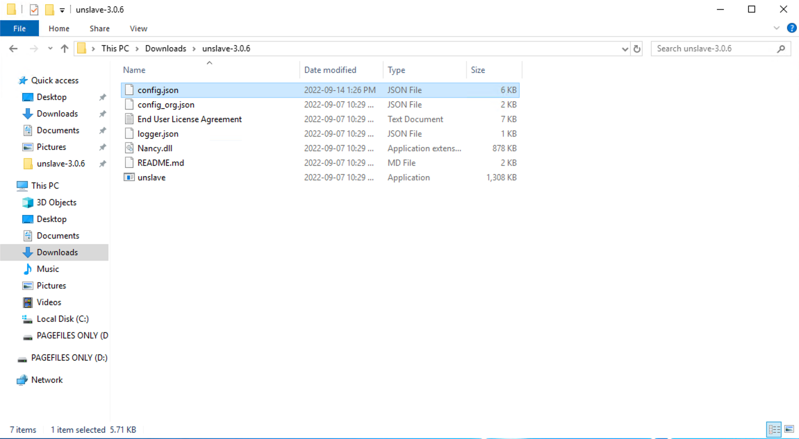

Objectives
In this Exercise you will learn how to:
- Prepare a Windows environment for the Modbus simulator
- Install the Modbus simulator
- Configure the Modbus simulator
Before you begin:
This Exercise requires that you have:
- completed the pre-requisites required for all labs
Tip
You can Right-Click on the images in this lab and select Open Image in New Tab
to view the details in the screen shots:
or use the browsers zoom function.
*NOTE: Information about the Modbus simulator can be found further down in this lab.
Prepare a Windows environment
You need to have a Windows based environment with at static IP Address in which the Modbus simulator will run as that is required by the integration configurator. IBM Cloud Classic Infrastructure with a Windows Server 2019 instance has been used in this lab.
The Modbus simulator requires port 502 to be open in the firewall for incoming traffic.
Install the Modbus simulator
We use the free Modbus simulator from Unserver to provide a couple of simulated Lenze i550 Variable Frequency Drives (VFD) for the purpose of this lab. Go to the Unslave download page and download the ZIP file. Unzip the downloaded file:
and navigate into the unslave folder:
No further installation is needed.
Configure the Modbus simulator
The config.json file contain the configuration of the Unslave Modbus simulator.
Start by renaming it to save a copy:
then download the config.json that contains the holding registers for 10 Lenze i550 VFD's.
You can get it here: config.json
Copy it into the Windows environment in the unslave folder:

Double-click on the unslave application to start the simulator:
and you will see a CMD window that looks like this:
Tip
The Modbus holding registers defined in the config.json are static values. However the Unslave provide an API (on port 9000) to alter the values, which is not covered in this lab.
Tip
Another config file is available with 90 Lenze i550 devices in case you need that. You can get it here: config-90.json
Congratulations you have successfully setup the simulator environment.